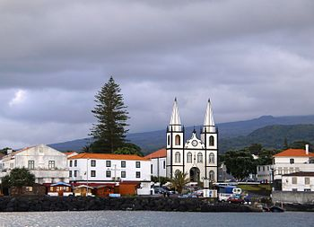
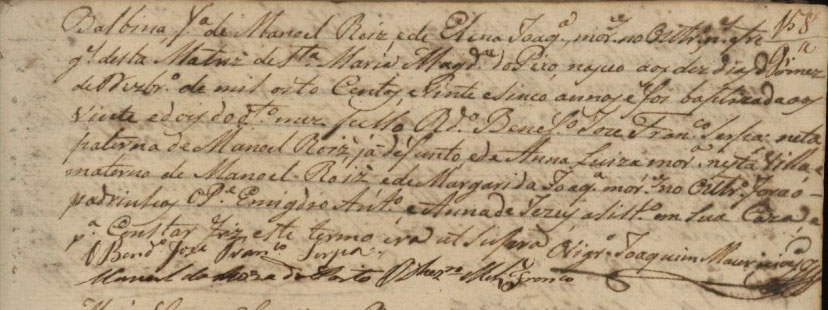
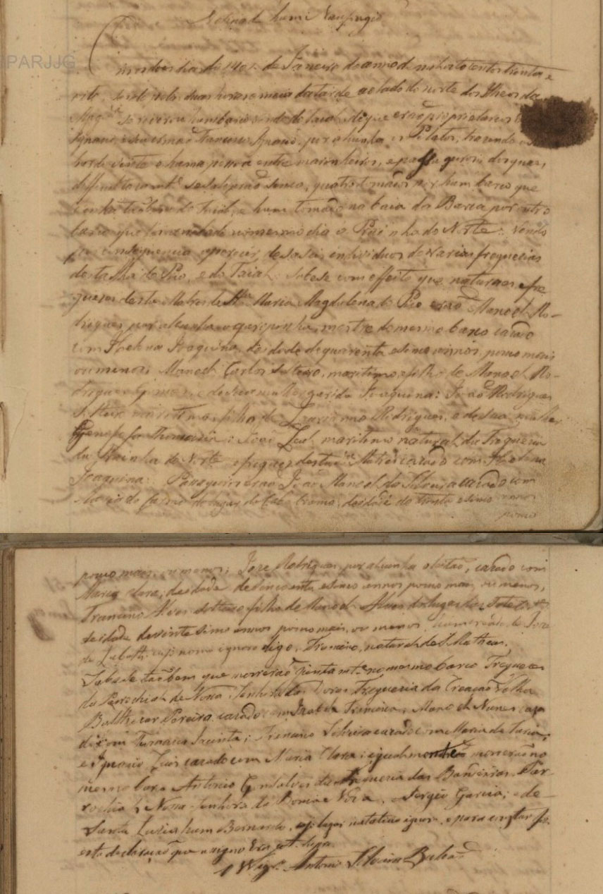
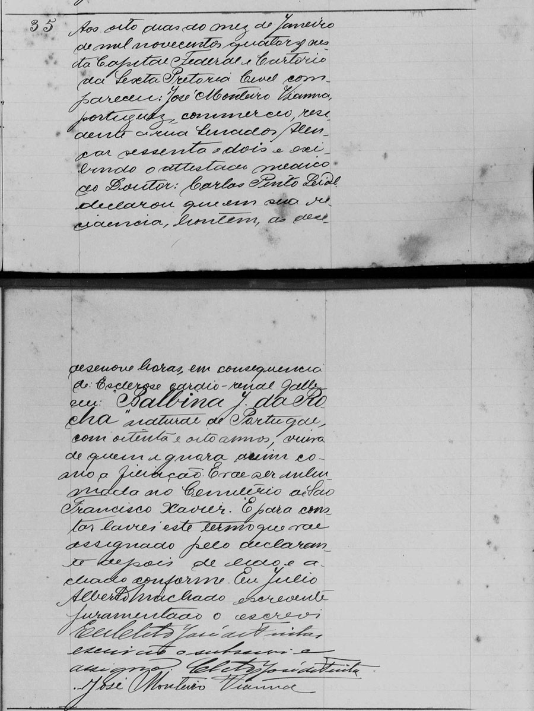

Balbina Joaquina da Rocha
1825
Freguesia da Madalena – Ilha do Pico

Madalena, ilha do Pico, Açores.
pt.wikipedia.org
Foi na Freguesia da Madalena que nasceu Balbina Joaquina em 10/12/1825 filha de Manuel Rodrigues (*03/10/1793-+14/01/1838) e Helena Joaquina (*23/12/1804-+20/02/1896).
O Batismo
Ballbina foi batizada na paróquia de Santa Maria Magdalena em 22 de dezembro de 1825

Inventário Genealógico do Centro de Conhecimento dos Açores / Portal Cultura Açores
Registro de Batismo de Balbina Joaquina
Balbina fa de Manoel Roiz e e de Elena Joaqa morres no Outtro e freges desta Matriz de Sta Maria Magdna do Pico nasceo aos dez dias do mez Dezbro de mil oito Centos e vinte e cinco annos e foi baptizada aos 22 do dto mez pello Rdo Benefo Jose Franco Serpa neta paterna de Manoel Roiz, já defunto, e de Anna Luiza Mora nesta Villa e materno de Manoel Roiz e de Margarida Joaqa morres no Outtro forão padrinhos o Pe Emigdio Anto e Anna de Jesus ? em sua caza e pa constar fiz este termo era ut supra ()
Os Pais e Irmãos
Manuel Rodrigues |
| Nascimento: 03/10/1793 Madalena – Ilha do Pico |
| Batismo: |
| Padrinhos: |
| Filiação: Manoel Rodrigues e Anna Luiza |
| Casamento: 15/01/1821 |
| Falecimento: 14/01/1838 Madalena – Ilha do Pico |
| Profissão: |
| Obs.: Abaixo transcrição do óbito por afogamento de Manuel Rodrigues |
Casamento com
| Helena Joaquina |
| Nascimento: 23/12/1804 Madalena – Ilha do Pico |
| Batismo: |
| Padrinhos: |
| Filiação: Manoel Rodrigues Gomes e Margarida Joaquina |
| Falecimento: 20/02/1896 Madalena – Ilha do Pico |
| Profissão: |
| Obs.: |
Filhos
Manuel |
| Nascimento: 26/11/1822 Madalena – Ilha do Pico |
| Batismo: |
| Padrinhos: |
| Filiação: |
| Casamento: |
| Falecimento: 08/11/1859 Madalena – Ilha do Pico |
| Profissão: |
| Obs.: |
Balbina |
| Nascimento: 10/12/1825 Madalena – Ilha do Pico |
| Batismo: 22/12/1925 Paroquia de Santa Maria Magdalena |
| Padrinhos: Pe Emigdio Antonio e Anna de Jesus ? |
| Casamento: 03/09/1862 com Vicente Pereira da Rocha (04/03/1821-12/03/1896), filho de Jose Pereira da Rocha Claudio e de Rosa da Rocha Monteiro< |
| Falecimento: 07/01/1914 Rio de Janeiro |
| Profissão: |
| Obs.: |
Maria Joaquina |
| Nascimento: 20/10/1828 Madalena – Ilha do Pico |
| Batismo: |
| Padrinhos: |
| Filiação: |
| Casamento: 28/07/1850 com João Garcia (?-?) filho de Manoel Garcia e Joaquina Rosa |
| Falecimento: 17/01/1914 Madalena – Ilha do Pico |
| Profissão: |
| Obs.: |
Antonio |
| Nascimento: 30/12/1831 Madalena – Ilha do Pico |
| Batismo: |
| Padrinhos: |
| Filiação: |
| Casamento: |
| Falecimento: |
| Profissão: |
| Obs.: |
Joao |
| Nascimento: 11/05/1833 Madalena – Ilha do Pico |
| Batismo: |
| Padrinhos: |
| Filiação: |
| Casamento: |
| Falecimento: |
| Profissão: |
| Obs.: |
Vicente |
| Nascimento: 12/10/1836 Madalena – Ilha do Pico |
| Batismo: |
| Padrinhos: |
| Filiação: |
| Casamento: |
| Falecimento: |
| Profissão: |
| Obs.: |
Fonte: Inventário Genealógico do Centro de Conhecimento dos Açores/Portal Cultura Açores: http://www.culturacores.azores.gov.pt/ / http://www.culturacores.azores.gov.pt/ig/
Informações obtidas no CITCEM-GHP Universidade do Minho NEPS (http://www.ghp.ics.uminho.pt/genealogias.html) Registros Civis do Cartório da Nona Circunscrição do Rio de Janeiro
O óbito do pai de Balbina em 1838
Encontramos que Manuel Rodrigues, pai de Balbina, morreu vítima de um naufrágio em 14 de janeiro de 1838. Devido à dificuldade de se ler, irei transcrever as partes importantes.

Inventário Genealógico do Centro de Conhecimento dos Açores / Portal Cultura Açores
Registro de Óbito de Manoel Rodrigues
“Em os (?) 14 de Janeiro do anno mil oitocentos e trinta e oito tendo pelas duas horas e meia da tarde ao lado dos norte dos Ilheos da Magna se revirou um barco saindo do Faial de que erão proprietários (?) Ignacio e seu irmão Francisco Ignacio ... trazendo vinte e huma pessoas entre marinheiros e passageiros ... Sabe-se com effeito que naturaes e fregueses desta Matriz de Santa Maria Magdalena erão Manoel Rodrigues por Alcunha (?) mestre do mesmo barco casado com Helena Joaquina (pai de Balbina Joaquina) de quarenta e sinco anos poco mais ou menos. Manoel Carlos solteiro, marítimo filho de Manoel Rodrigues Gomes e de sua mulher Margarida Joaquina (tio de Balbina Joaquina)... Segue toda a relação dos náufragos..."
A Vinda para o Brasil
Infelizmente não encontramos nenhum registro da vinda de Balbina Joaquina para o Brasil. Todas as informações foram baseadas nos documentos que encontramos, como obituários e certidões.
O Falecimento
Balbina Joaquina faleceu no Rio de Janeiro em 07/01/1914. Na notícia de seu falecimento no Jornal O Paiz de 08/01/1914, diz que o enterro seria às 5 horas da tarde saindo da Rua Senador Alencar (Jornal O Paiz – Hemeroteca Digital – Biblioteca Nacional) no endereço http://memoria.bn.br/DocReader/docreader.aspx?bib=178691_04&PagFis=21025). Em seu obituário no mesmo Jornal O Paiz de 08/01/1914, lemos: Leopoldina da Rocha e Silva e filhas, Francisco Alves Peixoto e senhora (ausentes), Maria Alexandrina da Rocha, Dr. Olavo Rocha e família, Luiz da Rocha e Silva e senhora (ausentes), Jorge da Rocha e Silva (ausente) e Bernardo Ferreira Vianna e filhas (ausentes) participam aos seus amigos o fallecimento da sua querida mãi, sogra e avó BALBINA J. DA ROCHA.... (a íntegra pode ser vista no endereço: http://memoria.bn.br/DocReade r/docreader.aspx?bib=178691_04&PagFis=21025)

Registros Civis do Cartório da Nona Circunscrição do Rio de Janeiro
Certidão de Óbito de Balbina Joaquina da Rocha (frente)
Certidão de Óbito de Balbina Pereira da Rocha (verso)
Aos oito dias do mez de Janeiro de mil novecentos e quatorze nesta Capital Federal e Cartório da Sexta Pretoria Cível compareceu José Monteiro Vianna, portuguez, commercio, residente a Rua Senador Alencar sessenta e dois e exibindo atestado médico do Doutor: Carlos Pinto Leidl declarou que em sua residencia, hontem as desenove horas em consequência de Esclerose cardio-renal falleceu Balbina J da Rocha natural de Portugal com oitenta e oito anos viúva de quem ignora assim como a filiação. E vae ser inhumada no Cemiterio de São Francisco Xavier. E para constar lavrei este termo que vae assignado pelo declarante depois de lido e achado conforme. Eu Julio Alberto Machado escrevente juramentado o escrevi... segue assinaturas